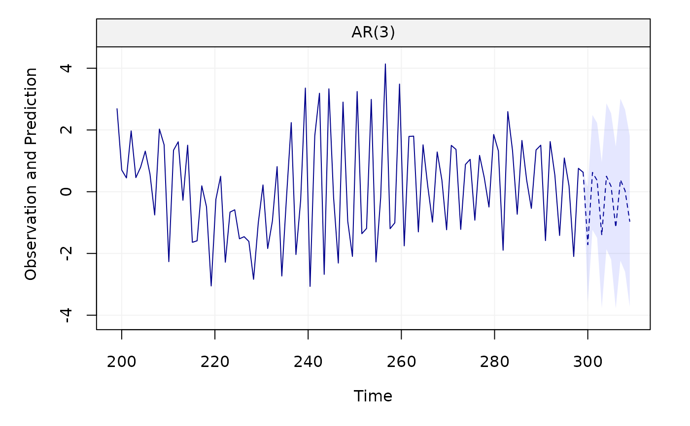

This function plots the time series forecast.
# S3 method for fitsimts predict( object, n.ahead = 10, show_last = 100, level = NULL, xlab = NULL, ylab = NULL, main = NULL, plot = TRUE, ... )
Arguments
| object | A |
|---|---|
| n.ahead | An |
| show_last | A |
| level | A |
| xlab | A |
| ylab | A |
| main | A |
| plot | A |
| ... | Additional arguments. |
Author
Stéphane Guerrier and Yuming Zhang
Examples
Xt = gen_gts(300, AR(phi = c(0, 0, 0.8), sigma2 = 1)) model = estimate(AR(3), Xt) predict(model)predict(model, level = 0.95)  x = gts(as.vector(lynx), start = 1821, end = 1934, freq = 1, unit_ts = bquote(paste(10^8," ",m^3)), name_ts = "Numbers", unit_time = "year", data_name = "Annual Numbers of Lynx Trappings") model = estimate(AR(1), x) predict(model, n.ahead = 20)
predict(model, n.ahead = 20, level = 0.95) predict(model, n.ahead = 20, level = c(0.50, 0.80, 0.95))